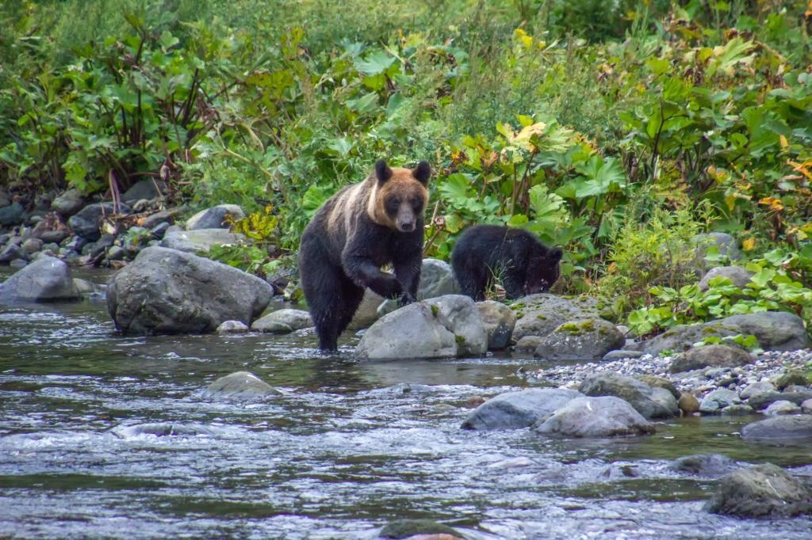

Bear attack suspected after human head found near lake in JapanHokkaido is one of the most common spots for humans to come face to face with the intimidating creatures. “Perhaps the main one is that the bear population of Hokkaido has recovered after years of over-hunting and as there are simply fewer hunters now,” Kevin Short, a naturalist and professor at Tokyo University of Information Studies, told the South China Morning Post of the uptick. “The deer population has also recovered, which is a key food source, while there have also been efforts across the prefecture to restore natural habitats in woodlands and along rivers, all of which increases the bears’ range.” |
 |